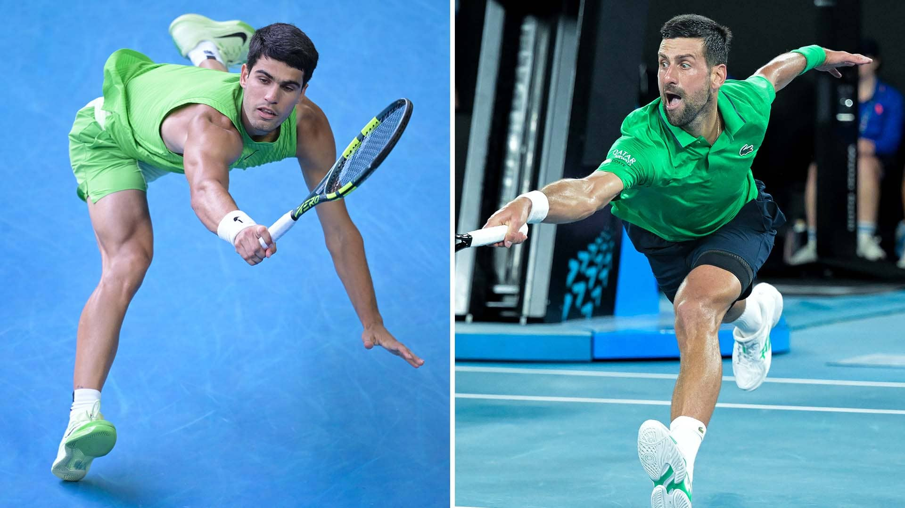

Contra todo pronóstico, Novak Djokovic dejó fuera de combate a Jannik Sinner y armó una final soñada para el domingo: el máximo ganador del torneo, con diez títulos en Melbourne, frente al número uno del mundo, Carlos Alcaraz.

El serbio y el español ya se han cruzado dos veces en finales de Wimbledon, ambas con triunfo para el murciano, aunque Djokovic ya ha demostrado que sabe cómo arruinarle celebraciones importantes: lo venció en Cincinnati 2023 y le arrebató el oro olímpico en París.
Alcaraz llega como favorito para conquistar por primera vez el Abierto de Australia, aunque ese mismo papel lo tenía Sinner antes de caer ante Djokovic en semifinales, un resultado que obligó a las casas de apuestas a pagar cuotas cercanas a 7.00 por otra hazaña del serbio.
Hazaña de Resistencia
El duelo entre Djokovic y Sinner fue una verdadera prueba de resistencia, con una duración de 4 horas y 12 minutos. Aun así, Nole llega en condiciones óptimas tras avanzar sin jugar los octavos por el retiro de Machac.
El camino del número uno
Por su parte, Alcaraz protagonizó una semifinal durísima ante Alexander Zverev. El español mostró señales de fatiga en el tercer set, pero en el quinto set sacó a relucir su carácter: remontó un quiebre cuando Zverev servía para partido y selló su boleto a la final.
Experiencia frente a juventud. Así se presenta la final del Abierto de Australia 2026. Para Alcaraz, ganar en Melbourne Park significaría completar el Grand Slam, ya que es el único grande que falta en su palmarés. Djokovic, en cambio, va por su título número 25 de Grand Slam.

🎾 Nuestro Pronóstico
Gana Carlos Alcaraz en 4 sets
La juventud y la motivación de cerrar el Grand Slam histórico inclinan la balanza hacia el murciano.